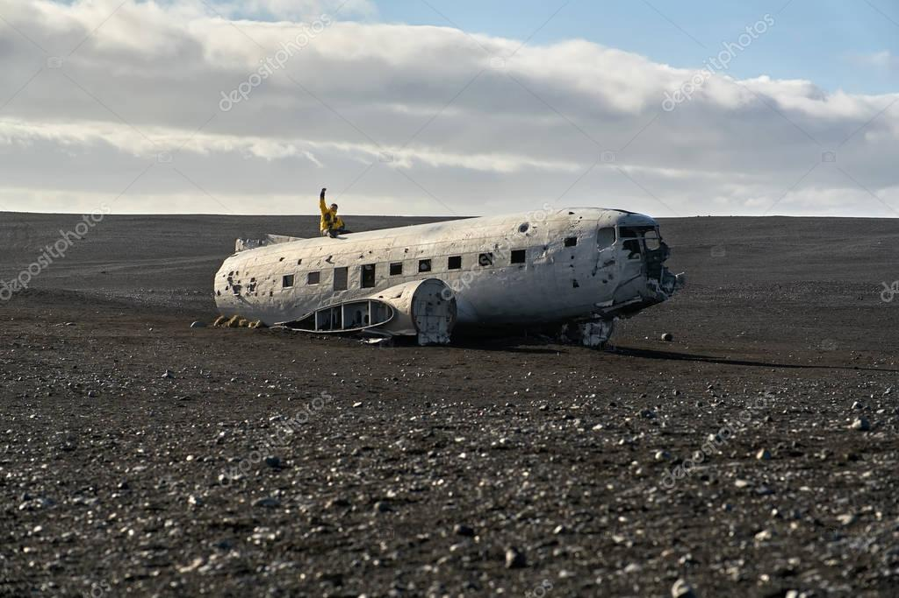

Te despiertas sobre la arena caliente. El sonido del mar golpeando la orilla es lo primero que escuchas. Todo a tu alrededor está cubierto de humo y restos metálicos. Recuerdas el momento del impacto… el caos… el grito de los pasajeros. Estás en una situación de supervivencia extrema. No ves a nadie más con vida. El silencio es inquietante. Tu cabeza duele y tu visión es borrosa. Debes actuar rápido. El día apenas comienza y el sol empieza a subir.
Toma tu primer decisión
Explorar la selva
Revisar los restos del avión